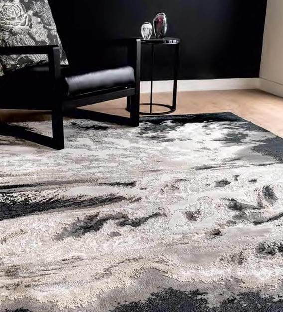
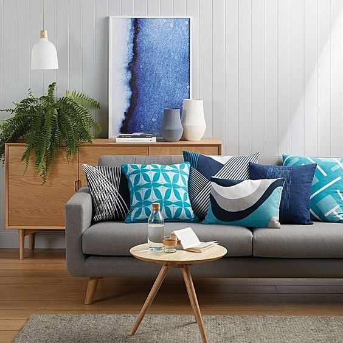

|
|
|
|

|
About | Bed & Bath | Cushions | Curtains | Rugs |
|---|
| CURTAINS | BEDDING | CUSHIONS | RUGS |
In 2020, designers prefer natural materials, such as silk and linen cotton, as well as natural prints. In addition to flax occupying the top positions, bamboo curtains are also in trend. Especially in favor, plain curtains that can perfectly fit into many design styles and give the rooms a finished look.
The trend of the coming year is the curtains of saturated tones. They look great next to beige, sand and pastel shades of wallpaper. At the same time, it is precisely single-layer curtains that are welcomed – multilayering is gradually losing relevance.
Choosing curtains of natural tones – beige, brown, green, blue and their shades, you can refresh the interior of any room.
The prints that were popular in the 80s of the last century do not leave fashionable Olympus – flowers that look advantageous on curtain fabric, futuristic drawings, and all kinds of geometric patterns.
Natural prints are becoming no less relevant – not only images of animals and plants, but also landscapes made in 3D technique
 From the thoughtful imperfections of wabi-sabi style to the natural simplicity of Scandinavian design, we love the stripped-down styles of this 2020 bedding trend.
Instead of perfectly pressed sheets and perma-stiff shams, think carelessly tossed throws, mismatched sheets or pillow cases, and cozy natural textures such as wool, cotton, and cashmere.
a classic black-and-white color scheme never goes out of style. One of the most popular bedding trends for 2020 is the use of bold, striking patterns in stark shades of black and white.
Use neutral accents and simple accessories to keep your space feeling relaxed and breezy, or mix and match with additional prints for a bold, eclectic look. For an extra pop of personality, incorporate an eye-catching accent color of your choice.
From the thoughtful imperfections of wabi-sabi style to the natural simplicity of Scandinavian design, we love the stripped-down styles of this 2020 bedding trend.
Instead of perfectly pressed sheets and perma-stiff shams, think carelessly tossed throws, mismatched sheets or pillow cases, and cozy natural textures such as wool, cotton, and cashmere.
a classic black-and-white color scheme never goes out of style. One of the most popular bedding trends for 2020 is the use of bold, striking patterns in stark shades of black and white.
Use neutral accents and simple accessories to keep your space feeling relaxed and breezy, or mix and match with additional prints for a bold, eclectic look. For an extra pop of personality, incorporate an eye-catching accent color of your choice.
Another popular bedding trend involves texture – and lots of it! Pom-poms, tassels, fringe, and mixed fabrics add tons of character without going over-the-top with color and pattern
 In any room you want to make a statement. Translating from canvas this trend is best represented flat on cushions, duvet covers, statement rugs and wallpaper designs.Try your hand at Ikat prints, to create a Bohemian look for your living room. Accessorise your surrounding with nature inspired accents like plants, or a statement showpiece that would enhance your style.Floral prints have always been ideal for Spring-Summer. Don’t hesitate to go all out with this print, because it only gets better. Experiement with asymmetric designs to create the ideal theme for your living space. Explore different styles and designs of floral cushions and probably a statement cushion with an illustrative print on it to equalise the setting of your ivory laid-back sofa. If you’re going in for a contemporary living room then look out for a statement sofa, like the classic ‘L’ shape. Its detachable quality is a huge plus point. Go for a unique colour, like sea green for something off beat. Think of solid, bold colours for your cushions. Play around with elements.
Layered rugs give your space a unique look and allows you to cover more area. This is also a helpful trick if you have a rug that’s too small. Be sure to consider your space if you want to layer and choose a large area rug and a smaller one or two that are roughly the same size and can be paired next to each other and overlap. Layering rugs lets you mix patterns, styles, colors, and textures for a more organic, eclectic space. A jute rug is an easy way to add texture to your space and they’re not just for the patio. Have a solid jute rug for a clean, minimalist look or layer with handmade rugs in faux fur or a geometric shag rug to blend with any style preference. Jute rugs can be round and decorative with cut-outs or solid and rectangular. A beautifully faded vintage-inspired rug is a trend that works for every room and style. Pair with modern furniture for an unexpected, chic look.
|
|
|
|